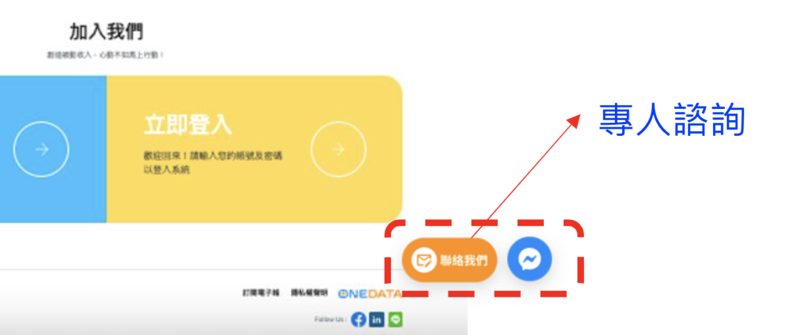
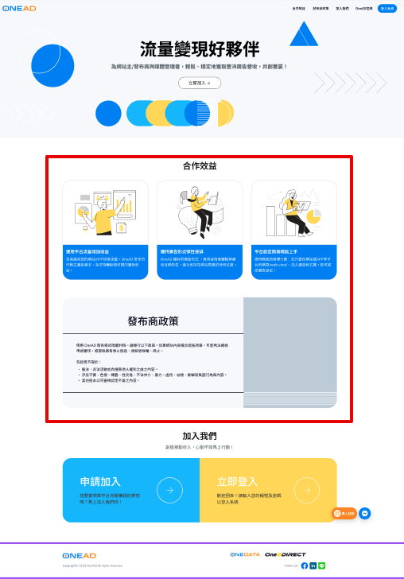
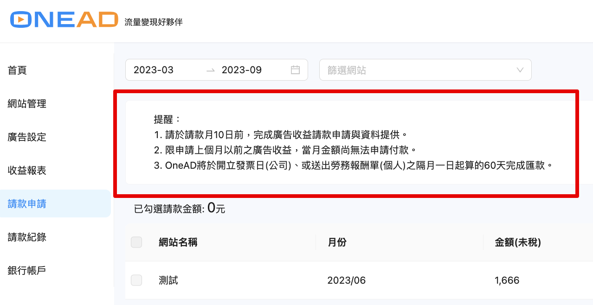

系統
功能
細項
Who
工時(小時)
備忘
OSS
網站審核時駁回時附帶填寫說明原因
FE
網站審核頁面新增表單填寫駁回原因(見 wireframe)
2h
在點擊[駁回]後彈出 modal, 讓審核人能有一個 textArea 輸入駁回原因, 輸入完成送出給後端寄送 mail。
BE
網站審核 API 新增駁回原因欄位
-
已有提供`note: '' | string`可做使用。
Partners
BE
Email 發信通知時, 帶入駁回原因
1h
Partners
手機號碼解除限制
FE
開始有非台灣的網站主來申請註冊，申請時填寫的手機是否可以放開限制，接受非台灣格式
手機號碼欄位檢查改為只要非空即可
- 後端有做驗證嗎？
8h
-
input 前方添加 select 給用戶選擇國碼 ( 國碼與電話國碼對應表 JSON )
-
input 驗證方法修改 ( 驗證方法範例 )
相關頁面:
-
註冊
-
個人資料
BE
API 新增 key
1h
畫面調整
FE
首頁調整
-
左上方 OneAD logo 連結到官網( https://supr.link/Sggft )
-
首頁右上方新增連結：加入我們之後增加
OneAD 官網連結( https://supr.link/Sggft ) -
註冊頁面的 聯絡我們 改為 專人諮詢
-
增加註冊頁面的 2 個聯絡圖示

-
區塊設計調整

6h
相關頁面:
-
首頁
-
註冊/ 登入
在「新增廣告單元(格式)」的頁面新增提醒文字說明
樣式同下


文字內容：
提供OneAD流量變現好夥伴之廣告流量，請設定「台灣地區」即可。 TextDrive快訊廣告：支援桌機與手機裝置的WebView頁面（不包括native APP )。
0.5h
相關頁面:
-
廣告設定 (文案 1)
-
新增廣告單元(格式) (文案 3 for TextDrive快訊廣告)